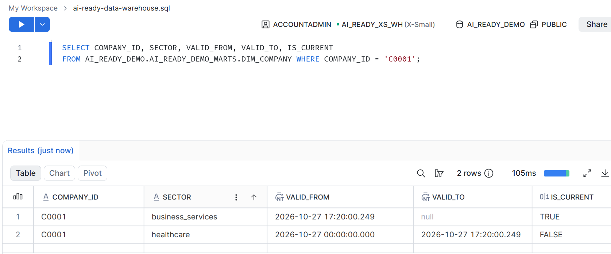
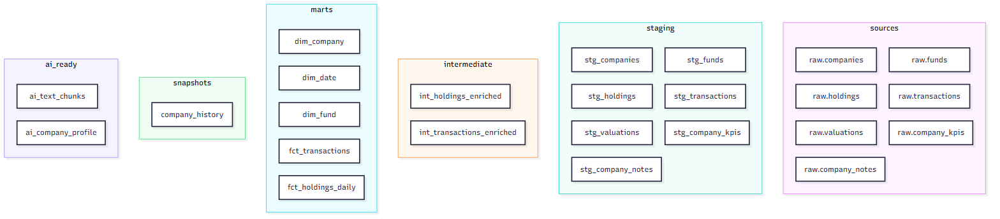

AI-ready data warehouse: one dbt project across three platforms
Personal prototype on synthetic data showing data-warehouse and lakehouse engineering; not production software.
Problem
Private-markets data combines holdings, transactions, company attributes and narrative notes with different grains and update patterns. A tested star schema makes those records consistent and traceable, while an AI-ready layer can carry concise context with source and date metadata. This prototype uses one dbt project across PostgreSQL, Snowflake and Databricks to demonstrate those patterns on synthetic data.
Architecture

Three-platform results
Runs used synthetic data covering 30 days and 400 companies on 27 Oct 2026. Source: FINDINGS.md.
| Platform | Rows (same synthetic dataset) | Load | Builds | Recorded cost |
|---|---|---|---|---|
| PostgreSQL 16 + pgvector (local) | Companies: 401 to 400; holdings: 1,942 to 1,940; dim_company: 401; transactions: 800; text chunks: 400 | Not captured | 3 builds; elapsed time not captured | Local Docker; cost not captured |
| Snowflake | Companies: 401 to 400; holdings: 1,942 to 1,940; dim_company: 401; transactions: 800; text chunks: 400 | 18.5 s | 71.1 s | 0.133 credits in the run hour (upper bound); 0.464 credits for the whole session |
| Databricks | Companies: 401 to 400; holdings: 1,942 to 1,940; dim_company: 401; transactions: 800; text chunks: 400 | 137.9 s | 393.5 s | DBUs not captured; Free Edition billing showed only assistant usage |
This is one small run, not a benchmark; the tiers and timing scope differ across platforms.
Quality evidence

The cross-platform summary in FINDINGS.md reports 88 tests and CI green.
Lineage

Bugs found and fixed during verification
| Bug | Effect | Fix |
|---|---|---|
| dbt options placed before the command | Invalid command ordering | Use one shared command builder. |
| Snapshot ran before staging existed | Required staging relations were missing. | Run seed, freshness, then build in DAG order. |
| Postgres views rebuilt concurrently | Deadlock during view rebuild. | Use a single-threaded local target. |
| Profile model took 76–102 s | Repeated company-staging logic slowed the model. | Remove duplicated staging logic; recorded runtime is about 0.1 s. |
| Snowflake COPY reused load metadata | A reloaded file was skipped. | Use unique staged file names for each load. |
| Staging kept the oldest row per key | Latest source values could be missed. | Choose the latest ingested_at and test against raw data. |
| UTC timestamps were compared with a non-UTC session timezone | New rows were treated as future-dated. | Compare in UTC and set the session timezone to UTC. |
| SSO user had no password for automation | Password-based automation could not authenticate. | Use a key-pair service user. |
| Jinja block tags appeared in profiles.yml | Profile YAML could not be parsed as intended. | Use values-only env_var() entries and YAML-load validation. |
| A Python file had a UTF-8 BOM | The BOM broke CI. | Write UTF-8 without a BOM and check for BOMs. |
| CI requires PNG exports for Mermaid diagrams | A missing or empty diagram PNG fails the export check. | Export each diagram to its matching docs/img PNG path. |
Limitations and next
All data is synthetic, and the demonstrated run is small. Phase 3 (Neo4j) is not built. Vector search is implemented for PostgreSQL only; cloud vector search is documented, not run. The results do not establish production readiness or a like-for-like platform benchmark.